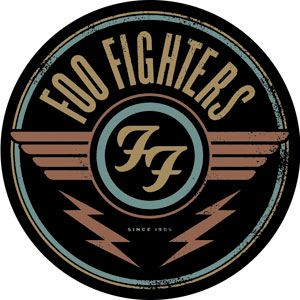

Hobbies
In his spare time Jonathan likes to tinker and tear apart anything and everything, from cars to guitars. He also loves to work out and go to the gym. Currently Jonathan, is enrolled in Coding Temple where he looks forward to building his skills and and knowledg to further his career.
Jonathan also enjoys to play his guitar, his favorite songs to play are by the Foo Fighters. Which happen to be his favorite band.
